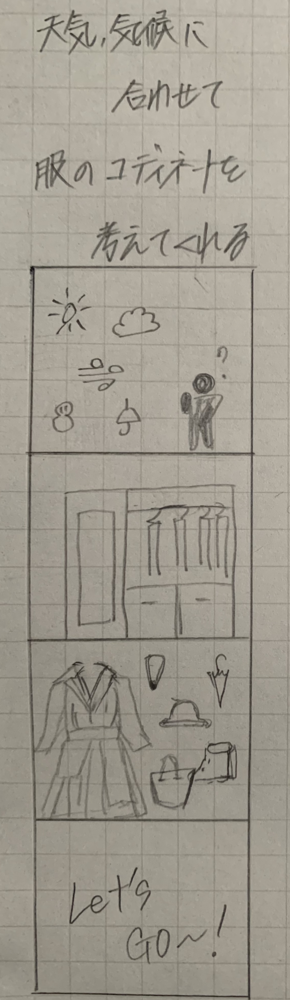

1.IoTとは何か
IoTとは、「Internet of Things」の略であり、日本語では「モノのインターネット」と訳されます。
IoTの応用例としては、スマートホーム、スマートシティ、農業や製造業の自動化、ヘルスケア、交通インフラなど
IoTは多大なビジネス上の利益を支配し、プライバシーやセキュリティの問題も抱えているため、適切な管理が求められます。
ChatGPT
2.IoTで何ができそうか？グループワークした内容（ポストイット画像）

3.IoTで何ができそうか？自分で考えたアイディア（スケッチ）
その日の天気や気候に合わせて服のコーディネートをしてくれるクローゼット
毎朝気温に合わせて服を考えるのがめんどくさい！
そんな時にこのクローゼットがあれば、気温や天候に合わせて適切なコーディネートを提案してくれます。
